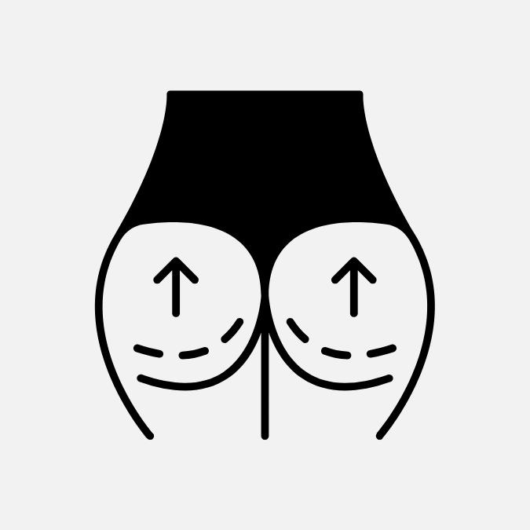
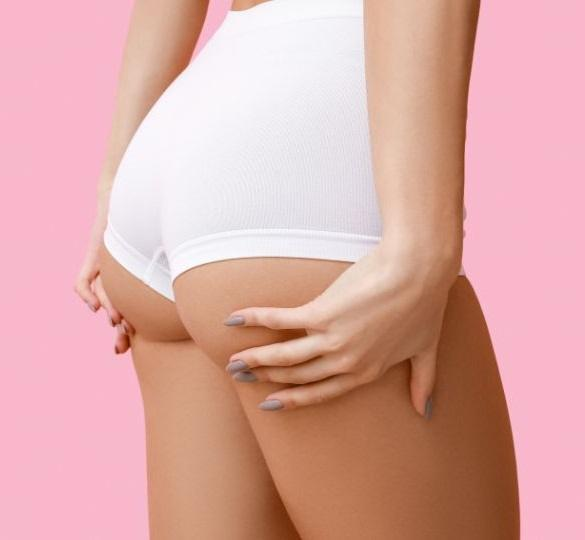
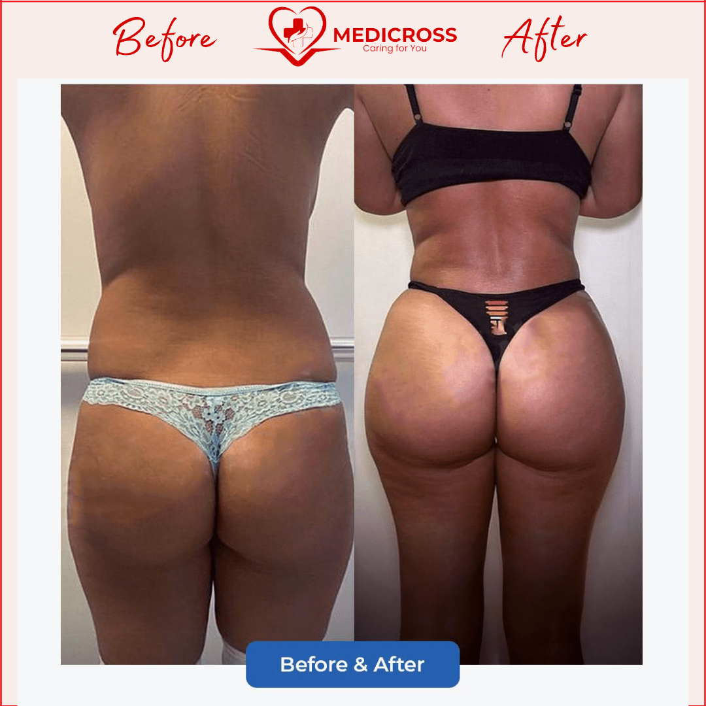
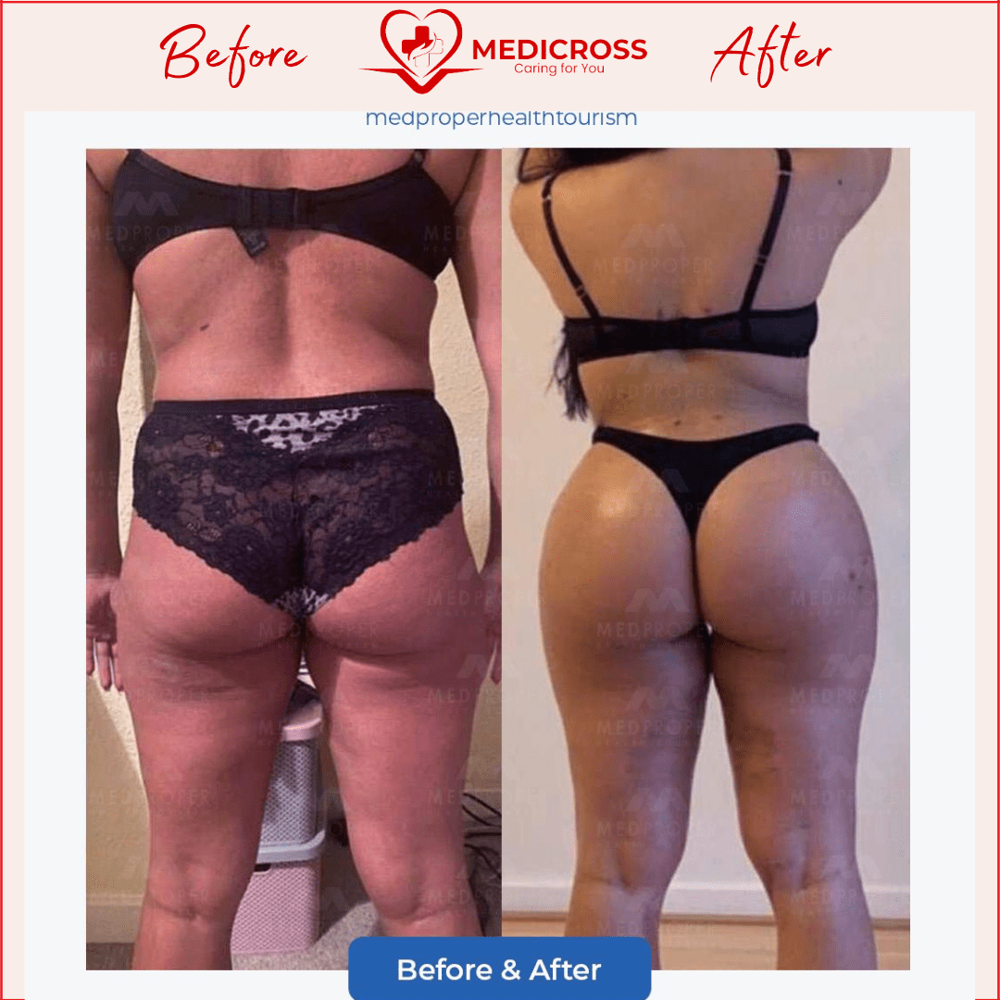
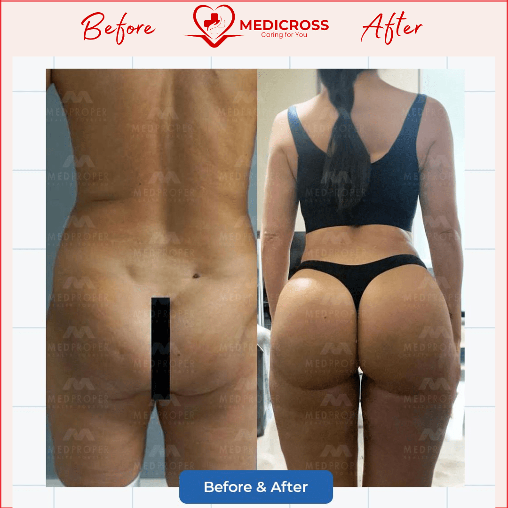
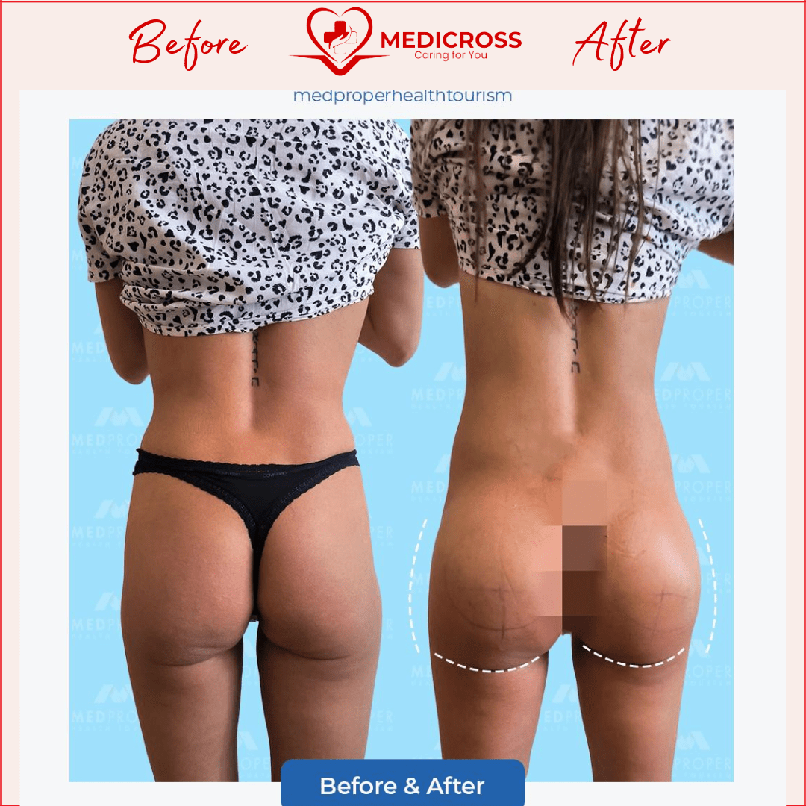

Ce este Brazilian Butt Lift (BBL)?
Brazilian Butt Lift este o intervenție estetică ce presupune transferul de grăsime proprie din anumite zone ale corpului (precum abdomen, coapse sau șolduri) în zona fesieră. Scopul este de a crea un contur mai rotund, ferm și atractiv al posteriorului, fără utilizarea implanturilor artificiale.
Procedura combină liposucția cu modelarea feselor pentru un rezultat natural și proporționat.

Când este recomandat Brazilian Butt Lift (BBL)?
BBL este recomandat persoanelor care își doresc o augmentare a feselor fără implanturi, folosind grăsimea proprie. Este ideală pentru cei care:
- Vor să îmbunătățească volumul și forma feselor.
- Își doresc să reducă depozitele de grăsime din alte zone (abdomen, flancuri, coapse).
- Caută un rezultat natural, fără risc de respingere a materialului implantat.
- Au o cantitate suficientă de grăsime disponibilă pentru transfer.
Cum decurge procedura?
Procedura se realizează sub anestezie generală și durează aproximativ 2-4 ore. Chirurgul extrage grăsime din zonele dorite prin liposucție, purifică această grăsime și apoi o injectează strategic în fese pentru a crea un contur estetic. Rezultatul urmărește echilibrarea proporțiilor corporale și obținerea unui aspect natural și armonios.
Pacienții rămân 1 noapte internați pentru monitorizare, după care sunt cazați într-un hotel de 4/5 stele pentru continuarea recuperării. În primele săptămâni este recomandat să se evite presiunea directă pe fese (statul prelungit în șezut), pentru a proteja celulele de grăsime transferată.
Majoritatea pacienților își pot relua activitățile ușoare după 2 săptămâni, iar rezultatele finale sunt vizibile după 3-6 luni.

Beneficiile procedurii Brazilian Butt Lift (BBL)
- Modelare naturală a siluetei prin utilizarea propriei grăsimi.
- Contur ferm și rotund al feselor, fără implanturi.
- Reducerea grăsimii din zone nedorite (abdomen, șolduri, coapse).
- Rezultate armonioase și echilibrate cu restul corpului.
- Cicatrici minime datorită tehnicii minim invazive.
- Durabilitatea rezultatelor în condițiile menținerii unei greutăți stabile.
- Îmbunătățirea încrederii în sine și a imaginii corporale.
Rezultate — înainte și după




De ce să alegi Tratamente Turcia by Medicross
- Abordare personalizată, adaptată la nevoi diferite și unice pentru fiecare pacient.
- Suntem asociați cu spitale din Turcia, Istanbul, cu experiență îndelungată.
- Intervențiile medicale sunt realizate în centre dedicate.
- Împreună cu partenerii noștri am creat un întreg program dedicat pacienților.
- Asigurăm translator, fiind conștienți că pacienții noștri au nevoie de comunicare permanentă.
- Echipa medicală va fi în contact cu tine oricând ai nevoie, atât înainte, cât și după operație, pe termen lung.